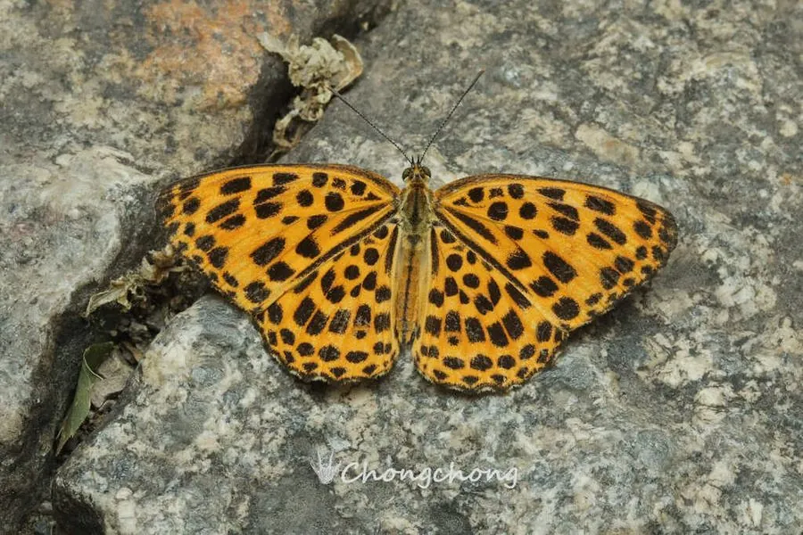

昆虫 · 动物界
猫蛱蝶 Timelaea maculata

翅面橙黄、布满黑色豹纹状斑点的中型蛱蝶，动作敏捷如猫，幼虫以朴树为食，见于中国南北各地。
- 分类
- 门节肢动物门纲昆虫纲目鳞翅目科蛱蝶科属猫蛱蝶属
- 栖息环境
- 丘陵山地、村落林缘、公园与朴树成片的疏林
- 地理分布
- 中国华北、华东、华中、西南及朝鲜半岛
- 保护级别
- 暂无保护级别，常见于城市与乡村绿地
物种志
猫蛱蝶的翅展约四至五厘米。翅面橙黄色，前翅和后翅布满大小不一的黑色圆斑与横带，排列方式像豹纹，翅缘有黑色锯齿边。翅反面颜色较淡，斑纹模糊，停歇时便于融入枯叶背景。雌蝶体型略大，黑斑更宽，腹部粗壮，雄蝶的橙黄色更鲜亮，飞行时像一小团跳动的火苗。
它分布于中国华北、华东、华中至西南的丘陵山地，也见于朝鲜半岛，栖息在朴树、榔榆等阔叶树成片的林缘、村落和公园。成虫在春夏季出现，飞行迅速而多变向，常突然折返，停歇时爱在阳光下张开双翅。幼虫以朴树叶片为食，以幼虫或蛹越冬，一年发生两代。它目前没有专门的保护级别，是城市绿地中常见的观赏蛱蝶。
形态与习性
- 翅展约四至五厘米
- 斑纹橙黄底满布黑色圆斑与横带，形似豹纹
- 翅反面色淡、斑纹模糊，似枯叶
- 食性幼虫取食朴树叶片
- 世代一年两代，以幼虫或蛹越冬
- 习性飞行迅速多变向，停歇时张开双翅晒太阳
趣味知识
- 它的动作又快又突然，常在半空折返，猫蛱蝶之名就来自这副猫一样的脾气。
- 翅上的黑斑像豹子身上的花点，在橙黄底色上格外显眼。
- 它和朴树关系密切，找猫蛱蝶先找朴树准没错。